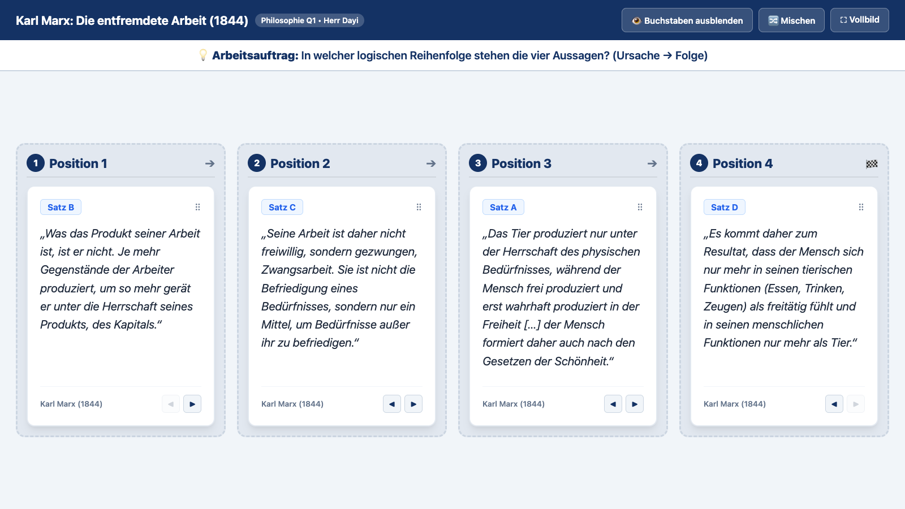

Schön, dass Ihr da seid!
Was geschieht mit Charlie an der Maschine? Wie verändern sich Körper, Geist und Verhalten?
[Freiraum für gemeinsame Notizen & Problemformulierung]
Jede Gruppe erhält einen isolierten Satz aus einem philosophischen Text.
Bringt die 4 Aussagen am Beamer in eine logische Reihenfolge (Ursache → Folge) und begründet eure Kurshypothese!

a) Marx in einem Satz:
Formuliert Marx' Kulturdiagnose pointiert in einem Satz.
b) Advanced Organizer:
Verortet Marx begründet im Spannungsfeld: Visitenkarte oder Trugbild?
Stellt Karl Marx' Kritik der entfremdeten Arbeit in einem pointierten Meme dar!
Wählt eine freie Vorlage im Generator (oder nutzt alternativ die Comic-Vorlage auf Papier).
Freier Online-Generator:
🎨 Meme-Generator öffnen → ⏱️ Zeit: ca. 15 Min. | 👥 EA / PA